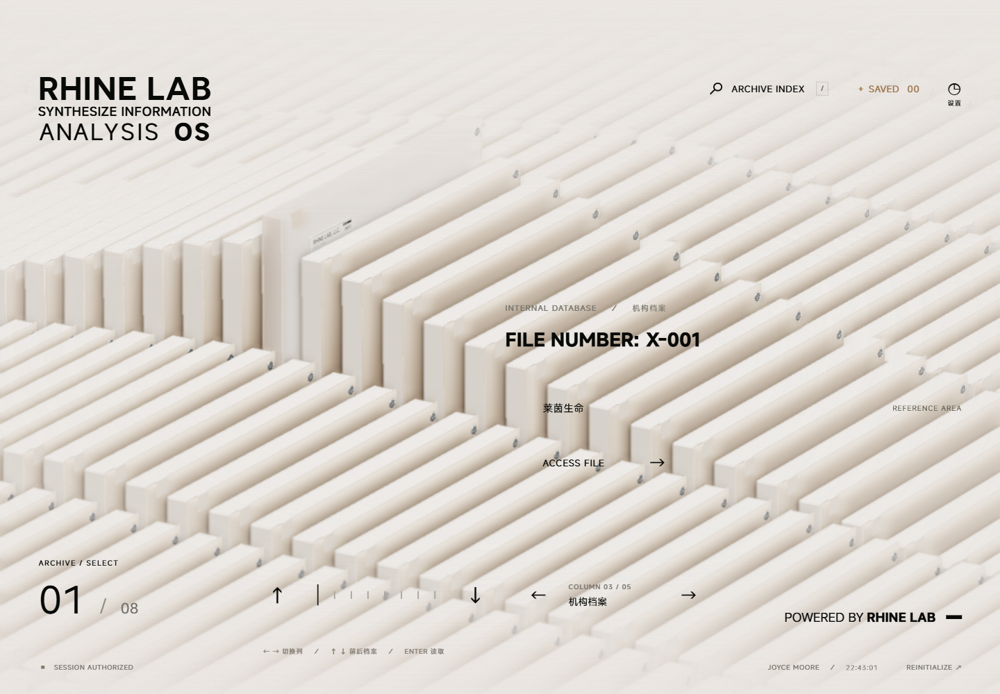
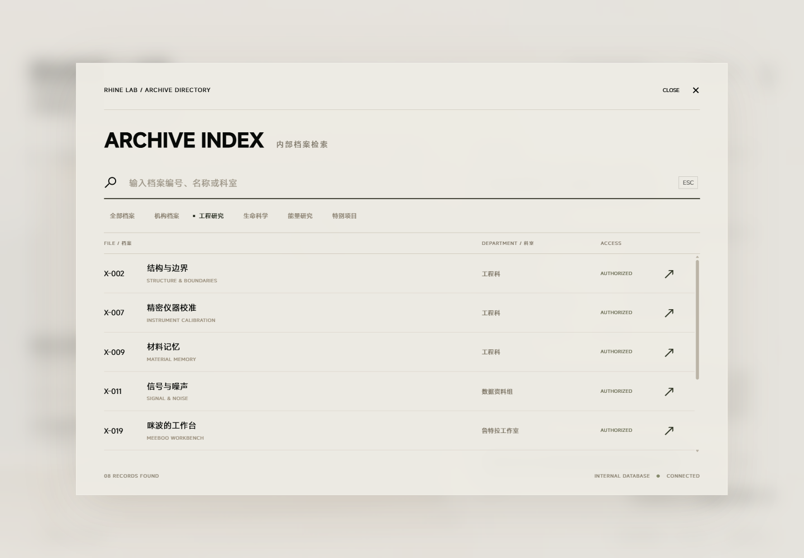
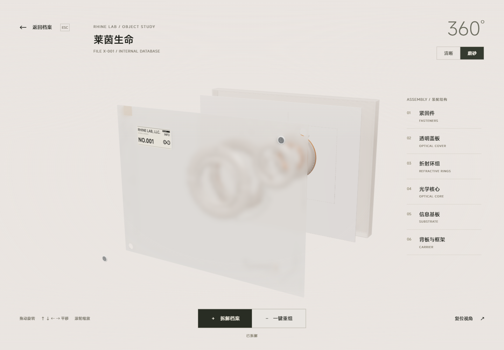
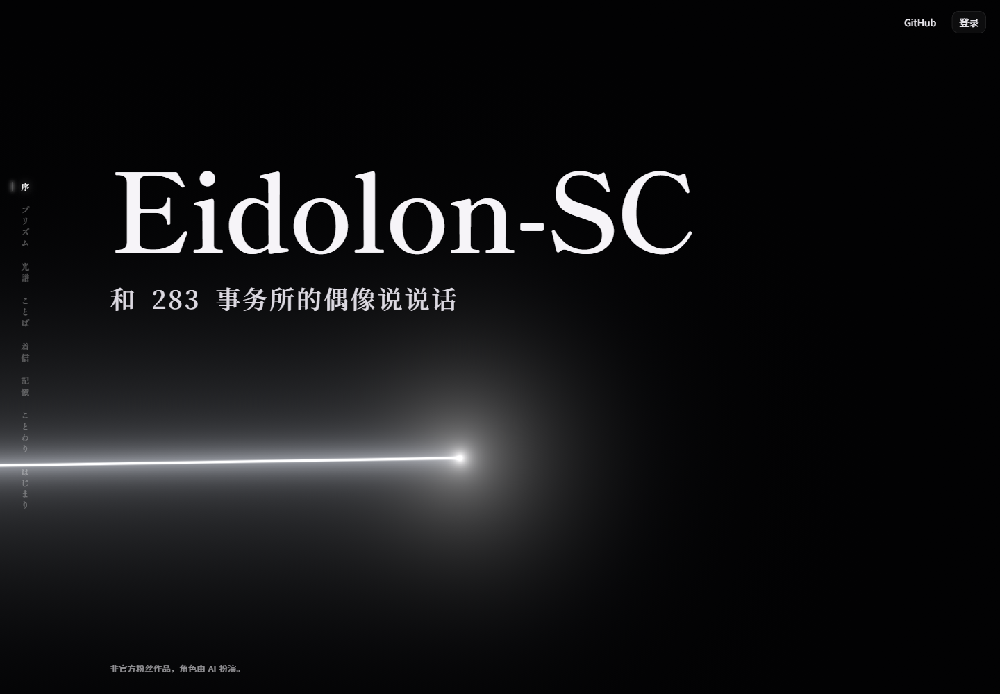
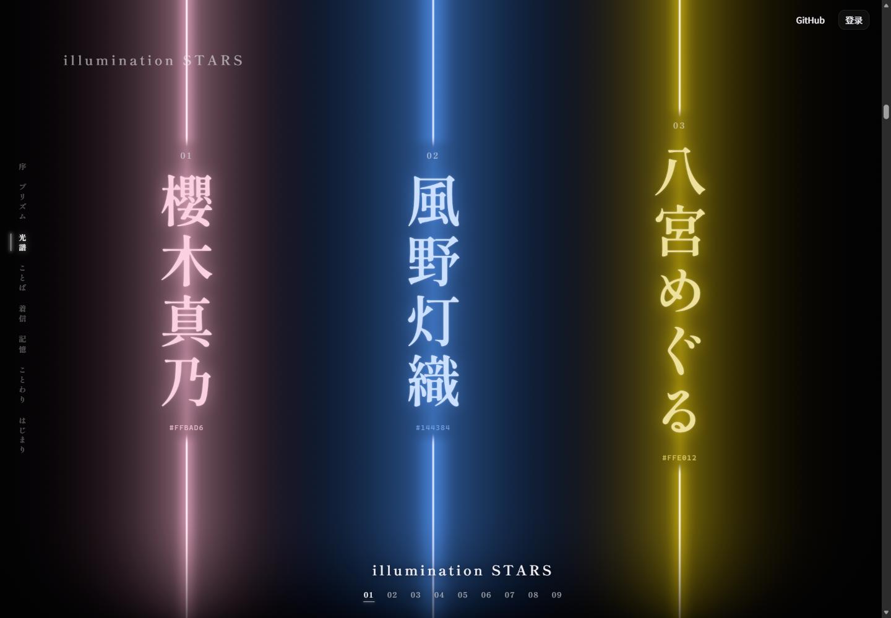
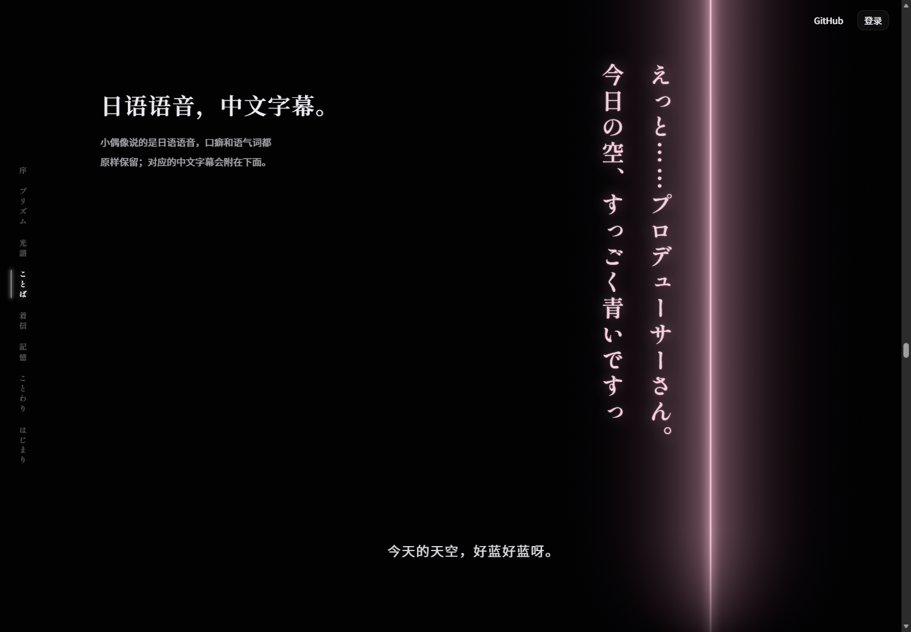
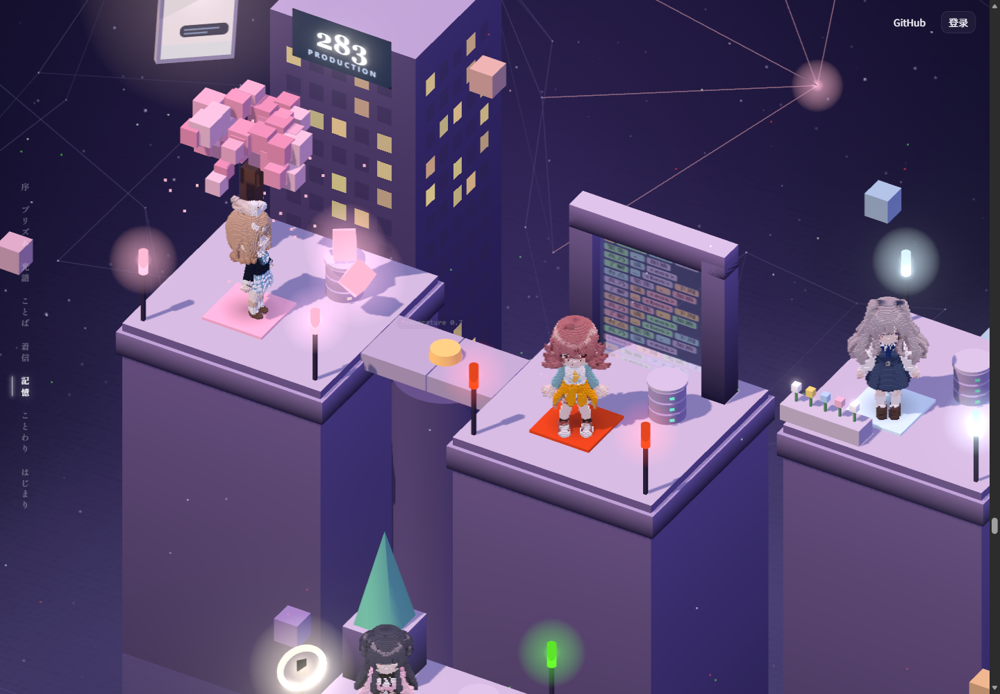
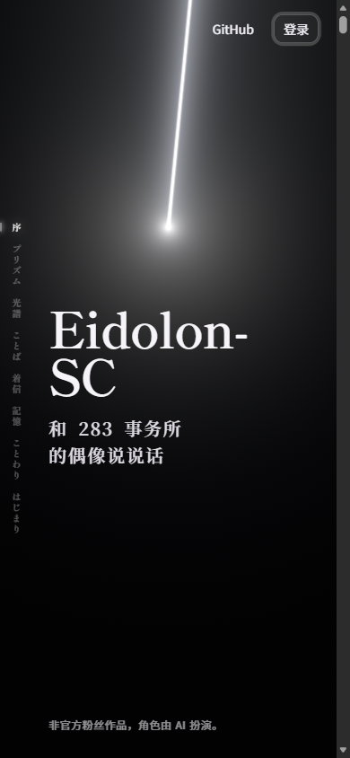
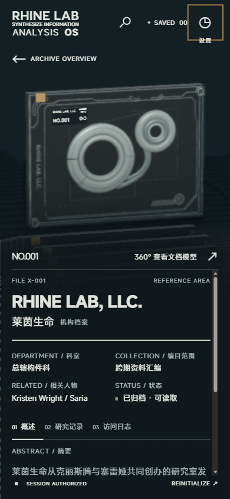

适合你的方向：个人项目档案馆
以 RhineLabUI 的档案秩序组织项目，
以 Eidolon 的光、留白和叙事节奏建立个人辨识度。
Identity
让访客记得你
首屏用姓名或账号、一句话定位与短光效开篇。光逐渐成为分类的线索，视觉主题与真实项目相关。
Exploration
让成果值得探索
精选项目有真实演示、用途说明和少量材质动效；项目详情沿用档案编号、字段和分层阅读。
Index
让全部项目找得到
首屏和导航都提供“全部项目”。目录支持搜索、筛选、排序和直接链接，项目数量由真实数据决定。
下文用“实测”表示本次浏览器观察，用“源码”表示代码或仓库文档证据，用“建议”表示为第二步作出的设计判断。这里的命名、参数与架构均为研究建议，尚未套用到你的仓库。
两种气质，共用一套秩序
共同点是克制的界面、明确的视觉主角和连续的状态变化。两者的布局、字体和访问路径各有任务。
| 维度 | RhineLabUI | Eidolon 未登录页 | 用于你的总首页 |
|---|---|---|---|
| 整体气质 | 暖灰、玻璃、工业终端、实体档案 | 近黑、白光、光谱、日式编辑排版 | 温和的档案正文 + 有节制的深色开篇，线条与字体层级持续一致 |
| 布局骨架 | 左上品牌、右上工具；中央阵列；详情左物件右正文 | 左侧章节轨、右上入口；全屏分幕；文字与光交替成为主角 | 固定工具导航、简短章节提示；精选可用分屏，目录保持连续阅读 |
| 字体对比 | MiSans；强无衬线标题、短英文标签、滚动编号 | Shippori Mincho B1 / Noto Serif SC / Noto Sans SC；大衬线与小正文对照 | 展示标题可以用衬线，项目名与正文保持清晰；不让所有字段都成为视觉主角 |
| 颜色职责 | 暖白底、黑字、暖金作为强调，支持暗色材质 | 黑底浅字；每个角色的基础色派生光晕、底色与文字色 | 每个项目分类一个稳定识别色；只强调当前选择，颜色不替代文字标签 |
| 信息单位 | 编号 → 分类 → 权限字段 → 摘要 → 页签 | 一束光 → 一个角色 → 一个组合 → 一段能力演示 | 项目名 → 一句话用途 → 类别/技术 → 状态 → Demo / 源码 |
| 交互语法 | 预览、抽取、解密、阅读、查看模型、返回 | 滚动推进、聚焦名牌、组合跳转、主动接听、打开登录 | 悬停预览、点击展开、明确跳转；键盘与触屏都能完成同样的任务 |
| 适用范围 | 沉浸式探索与有限档案集合 | 面向新访客的产品叙事 | 有记忆点的门面 + 能容纳不断增长项目的长期目录 |
依据：Rhine 样式、Rhine 设计记录、Eidolon 页面结构、Eidolon 样式。此表最后一列为本报告的迁移建议。
画面为何成立
截图均来自本次在线浏览。点击图片可查看原尺寸；研究图保留原站内容与署名线索。
A. RhineLabUI：材质是主角，界面像标注



颜色来自源码；玻璃效果包含 Three.js 物理材质和自定义着色器，不能只用 CSS 的背景模糊还原。依据：样式、材质与揭示、界面过渡。
B. Eidolon：让光成为贯穿页面的线索




1440px 视口下，大标题计算字号为 158.4px；源码使用 clamp(56px, 11vw, 184px)。左轨桌面为 72px，窄屏为 36px。原站章节轨是进度提示；组合跳转另有按钮。依据：排版、光层与循环、时间线。
C. 窄屏必须重新构图


可迁移的实现方法
重点看状态、数据、渲染和排版之间如何配合。按相应职责重新实现，更容易适配你的项目规模。
| 代码位置 | 实现要点 | 迁移到个人首页 |
|---|---|---|
| Rhine main.ts | boot / archive / detail 三种模式；DOM 内容与场景连接；检索、设置及独立查看器有各自入口。 | 建立目录 / 项目详情 / 预览的清楚状态，详情关闭后保留筛选、滚动位置和触发点。 |
| Rhine ui-transitions.ts | 过渡读取当前透明度与位移；revision 避免旧回调覆盖新状态。弹窗默认 300ms 进入、200ms 退出，正文 150ms。 | 连续开关、快速换项目时接续当前状态；退出动画完成再移除内容，减少动态效果时直接收束。 |
| Rhine appearance.ts scene.ts | 阵列采用实例化；抽取与清晰度在同一物件上连续变更。材质涉及 transmission、roughness 与自定义 shader。 | 三维限定于精选项目的展示区，目录仍用平面文本和图片。先确保内容可用，再决定是否承担这份渲染成本。 |
| Rhine content/README.md | 内容独立于 TypeScript，页面与 TXT 共用同一份 JSON；当前校验明确限定五个分类、每类八份、合计四十份。 | 内容分离保留，固定数量规则重写。支持任意项目数量、空分类、缺失 Demo、Fork 与归档状态。 |
| Rhine viewport-layout.ts | 桌面逻辑舞台与窄屏 CSS 像素布局分开；镜头按视口重新取景。 | 手机使用纵向详情和真实可读字号；不能只把桌面布局整体 scale 缩小。 |
| Eidolon Landing.tsx | 标题、文案、颜色、分组在服务端准备；DOM 标记各幕，客户端接收少量结构化数据。 | 静态构建时就输出身份介绍、项目摘要与链接，避免等 GitHub API 和 WebGL 才能看到内容。 |
| Eidolon LightStage.tsx stageStore.ts | 单一 requestAnimationFrame 推进滚动、纯模型、DOM 样式及绘制；只在当前幕、组合等离散状态改变时通知 React。 | 连续动效走 CSS 变量或渲染循环；不把每帧位置都写入组件状态，避免整页无效更新。 |
| Eidolon model/timeline.ts | 以“滚过多少屏”为时间单位；sticky 舞台的高度和画面状态共用时间线。 | 仅为短开篇或少量精选建立时间线。全部项目目录使用正常文档流，并提供直接锚点。 |
| Eidolon model/tier.ts canvasStage.ts | full / lite / basic / reduced / static 五档；优先考虑省流量、WebGL、减少动态和触屏。场景提前约一屏加载，远离时停绘并按条件释放。 | 至少实现完整、轻量、静态路径；帧慢或上下文丢失时保留项目内容。局部效果失败不应拖垮整页。 |
| Eidolon layout.tsx | 展示字体自托管；首屏字集与其余字集分离，只预载首屏；展示页面有自己的根布局。 | 复用字体加载原则，重新覆盖你的姓名与动态项目名。原站精简字库不一定包含你的新文字。 |
| Eidolon model/color.ts | 基础色保持稳定，在 OKLab 中派生光晕、深底和可读文字色；算法在服务端运行。 | 分类色建立一组派生 token，正文颜色独立控制；暗蓝等分类不直接拿原色做黑底小字。 |
| Eidolon LandingEntry.tsx | hover / focus 时预取面板，点击后才挂载。页头入口与结尾入口共用逻辑。 | 可用于“项目详情”资源的意图预取；普通源码和 Demo 仍提供标准链接。 |
动效要响应最新操作
Rhine 的编号与标题使用约 460ms 的滚动配置；Eidolon 的模型与循环分离。值得保留的是“可中断、无过期回调、快速输入不排队”的行为。
性能预算要说明口径
Eidolon ADR 的目标是落地页自身首屏 JS 压缩后不超过 50KB，排除框架基线。它是仓库的设计预算，本次没有重新跑出该页面的 Lighthouse 成绩。查看 ADR
为你的首页归纳的规范
以下全部是第二步建议。保留可辨识的风格，同时让内容、数量和访问路径适合你的真实仓库。
视觉规则
- 一个主隐喻：每个项目是一份成果档案；分类线索可从光束过渡为目录刻度。
- 两个明暗场景：深色开篇建立氛围，暖灰目录便于阅读；边界有清楚转场，字体与字段语言保持连续。
- 三层字体：展示标题、项目标题/正文、元数据。长项目名保持横排；竖排只用于简短章节装饰。
- 颜色有含义：分类色稳定；活跃项才发光。状态同时有文字，不能只靠颜色区分。
- 材质有范围：玻璃和透视只出现在少量展示物件；搜索、筛选、长正文使用稳定平面。
交互规则
- 首屏可直达全部项目：入口与介绍同时出现；短开篇不锁定滚动，也不要求完成“身份验证”。
- 预览与打开分工：hover / focus 可以预览，点击或 Enter 明确打开；触屏有同等可用的入口。
- 标准链接可直接访问：源码、Demo、文档均用真实 URL；支持复制、另开标签和浏览器返回。
- 详情返回保留上下文：保留筛选、排序、目录滚动；Esc 关闭弹层并归还焦点。
- 减少动态仍完整：改为纵向静态排版；无 WebGL 也能浏览全部内容。声音默认静音，只有访客主动开启才播放。
建议的起始设计参数
| 项目 | 建议值 | 用途与边界 |
|---|---|---|
| 基础颜色 | Paper #E8E5E1 · Ink #151A17 · Muted #62665E · Line #BDB9B0 · Accent #A67D48 · Night #11181B | 这是本报告的归纳配色；各主题的文字、链接及焦点对比度在实施时分别验证。 |
| 字号 | 桌面展示标题 72–132px；窄屏 40–56px；正文 16–18px | 使用 clamp 和真实文本测试长标题；具体字体优先服从你的现有品牌。 |
| 间距 | 4 / 8 / 12 / 16 / 24 / 32 / 48 / 64 / 96px | 细线组织区域；主次通过字号、距离和密度区分。 |
| 触控 | 主要触控目标至少 44×44px | 手机筛选可折叠；正文独立滚动时避免与页面手势冲突。 |
| 微交互 | hover 160ms；正文 150ms；弹层进入 300ms / 退出 200ms；滚动标签 460ms | 选用少量一致节奏；不必每个数字都滚动。减少动态时直接抵达最终状态。 |
| 开篇与性能 | 开篇效果建议不超过 1.2s；LCP ≤2.5s、CLS ≤0.1 作为实施验收目标 | 这些是待测目标，当前没有你的首页性能成绩。首屏图片、字体和延迟效果分开预算。 |
第二步如何吸收套用
这一节给出实施依据，不代表已开始改仓库。实际项目内容、身份和仓库位置均留待第二步核对。
全部项目 / GitHub
一句话价值与入口
结果数量与状态
源码 / Demo / 文档
同步日期与参考署名
用数据驱动全部项目
建议在构建阶段分页同步已确认账号的公开仓库，生成静态项目快照，再用人工配置补充精选顺序、展示名、分类、截图与更友好的介绍。以 GitHub repository id 为稳定标识，避免改名或排序后详情、收藏指错项目。
“全部”的暂定范围是目标账号下的公开项目，Fork 与归档保留标记和查询入口；组织项目与其他归属需要结合你的实际账号核对。私人仓库不会因“全部项目”被自动公开。抓取失败时保留最后成功快照并展示真实同步时间。
GitHub 公共元数据 → projects.generated.json
repository id、full_name、description、topics、language
html_url、homepage、stars、fork、archived、pushed_at
人工展示配置 → projects.curated.json
displayName、summary、category、featuredOrder
cover、demoUrl、myContribution、highlights
合并结果 → 静态项目正文 + 目录 + 可选特效
缺失字段有明确回退；统计、名称和链接不由动画层编造实现建议
可用 Vite + TypeScript + CSS，静态构建可读项目正文，再用轻量 DOM 逻辑实现筛选与详情。Three.js 仅在确定需要的展示区按需载入。若目标仓库已有 React 等框架，优先沿用现有架构。
分出内容、目录、详情、动效和数据同步的职责，避免把两个参考的完整应用与后台一起移植。
GitHub 展示方式
建议用仓库保存首页源码，GitHub Pages 承载可交互网页，个人资料 README 提供介绍与入口。Pages 可发布静态 HTML、CSS 和 JavaScript；具体采用账号站点还是项目站点，要结合目标仓库决定。
账号站点通常在 owner.github.io；项目站点通常在 owner.github.io/repositoryname。实施时检查基础路径和刷新行为。GitHub 官方说明
明确的取舍
| 保留 | 改写 | 不纳入总首页 |
|---|---|---|
| 档案编号与细线字段 精选项目的实体感 渐进加载与无 WebGL 回退 连续、可打断的微交互 | 五类八份 → 任意数量 角色光谱 → 真实项目分类 长分幕 → 短开篇与少量精选 游戏资料 → 项目成果说明 | 登录门槛、AI 对话后台 角色立绘、共享记忆、来电玩法 强制长开场 全站重三维与每项目全屏横滚 |
第二步的验收依据
- 01收录范围内的项目均能在目录找到，筛选后能清空并恢复全部。
- 02统计、状态与链接来自真实数据，缺失 Demo 或图片有明确回退。
- 03关闭特效、无 WebGL 或减少动态时，内容与链接仍完整。
- 04390px 窄屏无横向溢出，主要按钮可触达，长标题可读。
- 05弹层支持 Esc、焦点归还与快速连续操作，返回保留目录位置。
- 06同步分页完整，失败保留旧快照，浏览器不需要私有令牌。
- 07实际部署路径下图片、字体、详情链接与刷新均可用。
- 08用实际构建与设备检查性能；所有预算与实测结果分开记录。
GitHub 项目元数据同步依据：公开用户仓库 API。当前没有创建 Actions、自动化、分支、提交或部署。
研究依据与完成范围
仓库固定到下列提交；线上截图是观察当时的部署。没有证据证明线上部署与所读提交完全一致。
RhineLabUI
LBEILC / RhineLabUI
README 所列在线体验
main：12cc5e4013acb9408f753ff71de6b8492299b7c8
提交时间：2026-10-08 22:52:38（UTC+8）
Eidolon-SC
Sallyn0225 / eidolon-sc
用户指定的未登录 demo
main：cd1c61751eddeaf1bd4cdef4133e5e67f3af4ec5
提交时间：2026-10-29 20:27:42（UTC+8）
已完成：两个仓库重点前端源码与设计文档研究；Rhine 的入口、开场片段、阵列、详情、模型查看器、拆解、磨砂切换、分类检索、设置、明暗主题与窄屏；Eidolon 的八幕内容抽样、未登录弹窗、窄屏与减少动态效果排版。
验证限制：未登录任何站点，未进入私人页面，未接听真实语音；未做触摸硬件、Safari 实机、完整无 JS 环境或 Lighthouse 测试。Rhine 在线页曾出现 manifest.webmanifest 的连接关闭错误，但主体与上述交互可用；本报告未据此确认 PWA 安装或离线能力。
来源与复用：Rhine 仓库标注 MIT；Eidolon 标注 AGPL-3.0-or-later，并单列第三方素材许可。第二步默认按本报告的方法重新实现你的界面；如复用具体源码或素材，应记录来源并遵守对应许可。原角色、Logo 和游戏素材不会默认成为你的个人品牌资产。依据：Rhine LICENSE、Eidolon LICENSING、展示素材 CREDITS。
展开 20 张原始截图与采集尺寸
- Eidolon：黑底首屏与白光1440 × 1000 · scrollY 0
- Eidolon：棱镜分光1440 × 1000 · scrollY 2600
- Eidolon：组合光谱与竖排姓名1440 × 1000 · scrollY 6500
- Eidolon：原文与字幕的分层1440 × 1000 · scrollY 22500
- Eidolon：来电展示1440 × 1000 · scrollY 26200
- Eidolon：记忆浮岛场景1440 × 1000 · scrollY 31200
- Eidolon：结尾光屏与入口1440 × 1000 · scrollY 40000
- Eidolon：未登录弹窗1440 × 1000 · scrollY 40000
- Eidolon：窄屏首屏390 × 844 · scrollY 0
- Eidolon：减少动态效果后的分光定格390 × 844 · scrollY 900
- RhineLabUI：资源就绪入口1440 × 1000
- RhineLabUI：开场片段1440 × 1000
- RhineLabUI：档案阵列1440 × 1000
- RhineLabUI：档案详情1440 × 1000
- RhineLabUI：独立模型查看器1440 × 1000
- RhineLabUI：拆解与磨砂材质1440 × 1000
- RhineLabUI：工程研究分类筛选1440 × 1000
- RhineLabUI：设置与画质预设1440 × 1000
- RhineLabUI：暗色详情1440 × 1000
- RhineLabUI：窄屏详情390 × 844
关键源码定位 · 24 项
- R1浅色底、MiSans、终端布局
LBEILC/RhineLabUI/src/style.css:5 - R2boot/archive/detail 状态与交互
LBEILC/RhineLabUI/src/main.ts:127 - R3可打断过渡、300/200/150ms
LBEILC/RhineLabUI/src/ui-transitions.ts:1 - R4真实玻璃材质和清晰度揭示
LBEILC/RhineLabUI/src/appearance.ts:27 - R5按屏幕重排与镜头构图
LBEILC/RhineLabUI/src/viewport-layout.ts:7 - R6内容分离与五类八份限制
LBEILC/RhineLabUI/content/README.md:5 - R7画质预设与缓冲像素上限
LBEILC/RhineLabUI/src/render-quality.ts:14 - R8MIT 声明
LBEILC/RhineLabUI/LICENSE:1 - R9InstancedMesh 档案阵列
LBEILC/RhineLabUI/src/scene.ts:471 - R10滚动标题与交互设计依据
LBEILC/RhineLabUI/DESIGN.md:18 - E1服务端可读内容、八幕结构
Sallyn0225/eidolon-sc/frontend/src/app/(landing)/Landing.tsx:32 - E2黑底、字体、竖排、首屏
Sallyn0225/eidolon-sc/frontend/src/app/(landing)/landing.css:23 - E3统一帧循环与滚动模型
Sallyn0225/eidolon-sc/frontend/src/app/(landing)/LightStage.tsx:34 - E4按屏数编排叙事
Sallyn0225/eidolon-sc/frontend/src/app/(landing)/model/timeline.ts:9 - E5五档渲染与降级规则
Sallyn0225/eidolon-sc/frontend/src/app/(landing)/model/tier.ts:9 - E6逐帧更新与组件状态分离
Sallyn0225/eidolon-sc/frontend/src/app/(landing)/stageStore.ts:27 - E7场景预加载、释放和局部失败
Sallyn0225/eidolon-sc/frontend/src/app/(landing)/canvasStage.ts:10 - E8本地字体子集与首屏预载
Sallyn0225/eidolon-sc/frontend/src/app/(landing)/layout.tsx:52 - E9基础色派生文字、光晕和深底
Sallyn0225/eidolon-sc/frontend/src/app/(landing)/model/color.ts:9 - E10按意图预取、点击后打开弹窗
Sallyn0225/eidolon-sc/frontend/src/app/(landing)/LandingEntry.tsx:5 - E11展示页面与应用的边界、性能预算
Sallyn0225/eidolon-sc/docs/adr/0016-landing-page-is-its-own-visual-world.md:1 - E12AGPL 与第三方素材的独立声明
Sallyn0225/eidolon-sc/LICENSING.md:1 - E13未登录来电展示与开场白播放
Sallyn0225/eidolon-sc/frontend/src/app/(landing)/Call.tsx:89 - E14手机模型及字体出处
Sallyn0225/eidolon-sc/frontend/src/app/(landing)/CREDITS.md:1